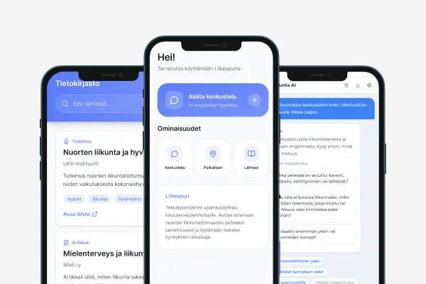
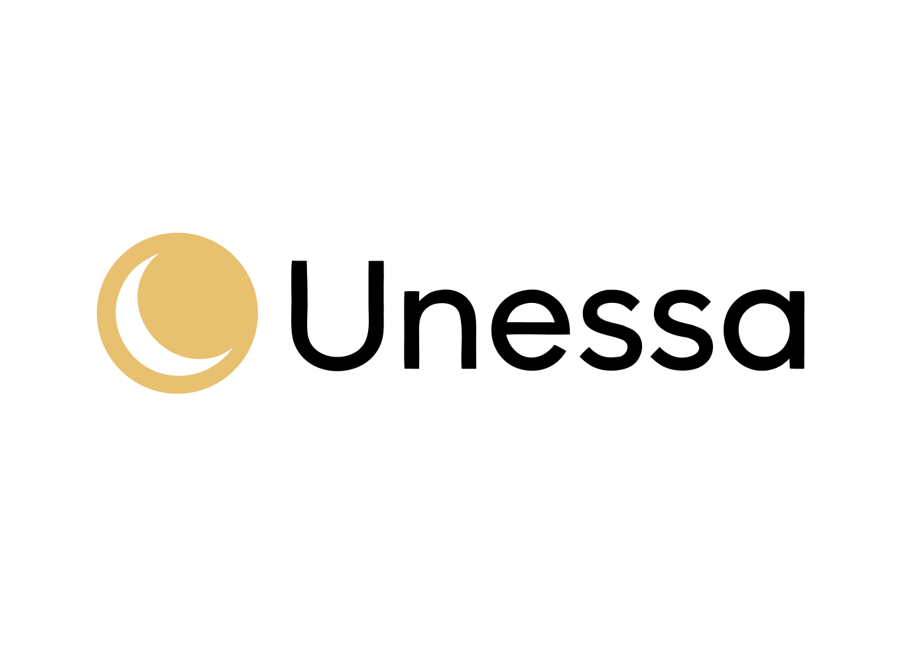
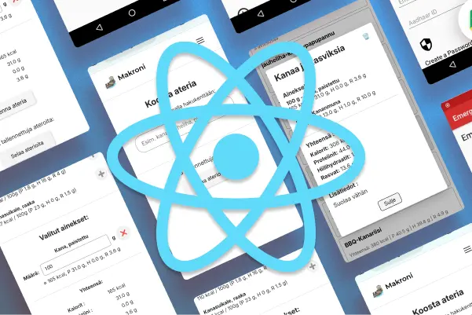
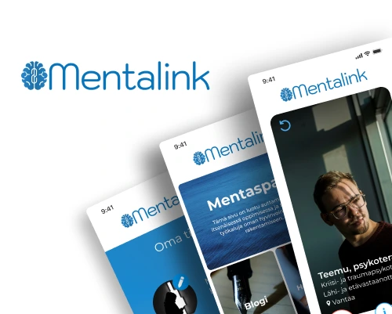
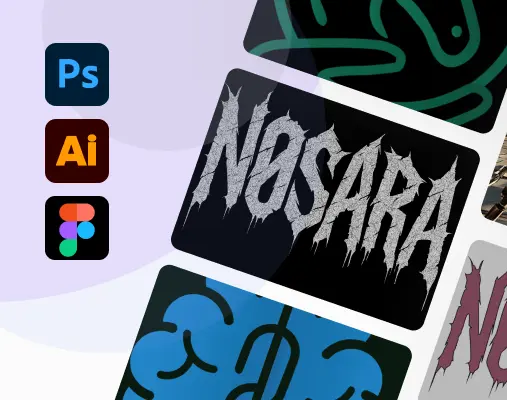

If it’s not accessible,
it’s not finished.
Jos ratkaisu ei ole saavutettava, se ei ole valmis.
I design clear digital services grounded in user research, visual thinking, and technical understanding. Suunnittelen selkeitä digitaalisia palveluita käyttäjätutkimuksen, visuaalisen ajattelun ja teknisen ymmärryksen pohjalta.

About Tietoa
I am a Business Information Technology student and UX designer interested in where people, visual design, and technology meet. My work focuses on clarity, accessibility, and solutions that serve both users and implementation. Olen IT-tradenomiopiskelija ja UX-suunnittelija, jota kiinnostaa ihmisten, visuaalisen suunnittelun ja teknologian välinen rajapinta. Suunnittelussani korostuvat selkeys, saavutettavuus ja ratkaisut, jotka palvelevat sekä käyttäjiä että toteutusta.
USER RESEARCHKÄYTTÄJÄTUTKIMUS
- User InterviewsKäyttäjähaastattelut
- Heuristic EvaluationHeuristinen arviointi
- Journey MappingKäyttäjäpolut
- Usability TestingKäytettävyystestaus
- Survey DesignKyselysuunnittelu
INTERACTION DESIGNSUUNNITTELU
- Information ArchitectureInformaatioarkkitehtuuri
- WireframingWireframet
- Interaction FlowsInteraktio-flow't
- UX WritingUX-kirjoittaminen
- PrototypingPrototypointi
PRODUCT & DELIVERYTUOTE & TOTEUTUS
- AccessibilitySaavutettavuus
- Frontend AwarenessFrontend-ymmärrys
- AI-assisted WorkflowAI-avusteinen workflow
- Analytics & InsightsAnalytiikka & insightit
- Cross-functional CollaborationMonialainen yhteistyö
Case StudiesCase-tutkimukset
-

Liikeapuri
From client brief to AI product prototype: PRD, risk boundaries and a React demo for sensitive physical activity conversations and local search. Asiakastoimeksiannosta AI-tuoteprototyypiksi: PRD, riskirajaukset ja React-demo sensitiivisen liikuntakeskustelun ja paikallishaun testaamiseen.
View case study Katso case -

Unessa
Designing a sleep-focused e-commerce concept and Shopify prototype. Market analysis, product curation, content strategy, and commercial logic. Hyvinvointilähtöisen verkkokauppakonseptin suunnittelu ja Shopify-prototypointi. Markkina-analyysi, tuotevalikoima, sisältöstrategia ja kaupallinen logiikka.
View case study Katso case -

Design Sprint: Museomatkat
Design sprint case study. Content will be added later. Design sprint -case. Sisältö lisätään myöhemmin.
View case study Katso case -

Makroni
Meal Macro Builder. Makrolaskuri aterioille.
View case study Katso case -

Mentalink
Matching service for finding the right therapist. Sopivuuspalvelu oikean terapeutin löytämiseen.
View case study Katso case -

OtherMuut
Small personal experiments, visual explorations and extra projects. Pieniä omia kokeiluja, visuaalisia explorointeja ja lisäprojekteja.
View collection Katso kokoelma
ContactYhteystiedot
Let's create something meaningful together. Luodaan jotain merkityksellistä yhdessä.
jan.nassi@outlook.com